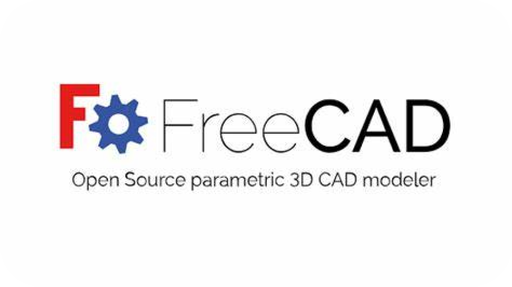

CAD stands for Computer Aided Design, which is the use of software to
create, modify, analyze, and optimize designs of various objects and
systems. CAD software can help designers and engineers to produce 2D
drawings or 3D models with precision and efficiency, as well as to
test and simulate their designs before manufacturing or construction.
CAD software can be used for a wide range of applications, such as
architecture, engineering, product design, industrial design,
animation, gaming, and more. Some of the benefits of using CAD
software are:
-
It can improve the quality and accuracy of the design, as well as
reduce errors and revisions.
-
It can increase the productivity and speed of the design process,
as well as enable collaboration and communication among different
stakeholders.
-
It can save costs and resources by minimizing waste and optimizing
materials and performance.
-
It can enhance the creativity and innovation of the design, as
well as enable the exploration of different alternatives and
scenarios.

A 3D parametric modeler that can create and modify complex and
organic shapes, as well as perform simulations and analyses. It
supports many open file formats and industry-specific toolsets.
A 3D solid modeling system that can create and analyze complex
geometries, such as vehicles, weapons, and buildings. It has a
powerful ray tracing engine and a suite of geometric tools.
A 2D CAD software that can create technical drawings, such as plans,
layouts, schematics, and diagrams. It has a user-friendly interface
and a large library of parts and symbols. It has a user-friendly
interface and a large library of parts and symbols.
A comprehensive 3D modeling and animation software that can create,
edit, and render 3D models, scenes, and animations. It has many
tools and features, such as sculpting, texturing, lighting, rigging,
and more. It can also import and export various file formats, such
as OBJ, STL, FBX, and more
CAD Design with Autodesk Inventor
Inventor is a 3D CAD software that provides professional-grade
mechanical design, documentation, and product simulation tools. It
is developed by Autodesk, the leading provider of CAD software and
services.
Inventor has a powerful blend of parametric, direct, freeform, and
rules-based design capabilities, which allow you to create and modify
complex and organic shapes with precision and efficiency. Inventor
also has integrated tools for sheet metal, frame design, tube and
pipe, cable & harness, presentations, rendering, simulation, machine
design, and more.
Inventor can also connect with other Autodesk products, such as
AutoCAD, Fusion 360, and Revit, and support generative design and
additive manufacturing.
Inventor is compatible with TrustedDWG, which is a technology that
preserves the quality and integrity of your CAD data. Inventor also
has powerful Model-Based Definition capabilities, which enable you to
embed manufacturing information directly in the 3D model, such as
dimensions, tolerances, annotations, and more. Inventor is one of the
most popular and widely used CAD software in the world, and it is
suitable for various industries and applications, such as
architecture, engineering, product design, industrial design, and more
Inventor is one of the most popular and widely used CAD software in
the world, and it is suitable for various industries and applications,
such as architecture, engineering, product design, industrial design,
and more.
Main Features of Inventor
Parametric modeling:
This is the most common and traditional way of creating 3D models,
where you define the shape and size of your model using parameters,
such as dimensions, constraints, equations, and more. Parametric
modeling allows you to create precise and consistent models that can
be easily modified and updated by changing the parameters. Inventor
has a robust and intuitive parametric modeling system that can create
sketches, features, parts, and assemblies.
This is a more flexible and freeform way of creating 3D models, where
you manipulate the geometry of your model directly, without using
parameters or constraints. Direct modeling allows you to create
organic and complex shapes that can be difficult or impossible to
create with parametric modeling. Inventor has a powerful and versatile
direct modeling system that can edit, move, rotate, scale, and deform
your model.
This is a more artistic and sculptural way of creating 3D models,
where you use tools such as push, pull, crease, bridge, and more to
shape your model like clay. Freeform modeling allows you to create
smooth and curved surfaces that can be hard or tedious to create with
parametric or direct modeling. Inventor has a unique and innovative
freeform modeling system that can create and edit T-spline surfaces,
which are a type of surface that can blend seamlessly with NURBS
surfaces.
Rules-based modeling: This is a more intelligent and automated way of
creating 3D models, where you use rules, logic, and algorithms to
generate your model based on your inputs and outputs. Rules-based
modeling allows you to create multiple and optimal design solutions
that can meet your requirements and objectives. Inventor has a
cutting-edge and advanced rules-based modeling system that can create
and edit generative designs, which are a type of design that can
optimize your model for performance, weight, cost, and more.
Specific Features Only to Inventor
Sheet metal: This is a feature that allows you to create and edit
sheet metal parts, such as brackets, enclosures, ducts, and more. You
can define the sheet metal parameters, such as thickness, bend radius,
and relief type, and then create sheet metal features, such as
flanges, bends, cuts, and more. You can also unfold and refold your
sheet metal part, as well as create a flat pattern for manufacturing.
This is a feature that allows you to create and edit frame structures,
such as trusses, racks, and more. You can use the frame generator tool
to create a frame skeleton from your 3D sketch or assembly, and then
populate it with standard or custom frame members, such as beams,
pipes, and more. You can also trim, extend, miter, and notch your
frame members, as well as create a bill of materials and a cut list
for manufacturing.
This is a feature that allows you to create and edit tube and pipe
runs, such as hoses, conduits, and more. You can use the tube and pipe
tool to create a tube and pipe skeleton from your 3D sketch or
assembly, and then populate it with standard or custom tube and pipe
components, such as fittings, valves, and more. You can also route,
bend, and adjust your tube and pipe runs, as well as create a bill of
materials and a cut list for manufacturing.
This is a feature that allows you to create and edit cable and harness
assemblies, such as electrical wiring, connectors, and more. You can
use the cable and harness tool to create a cable and harness skeleton
from your 3D sketch or assembly, and then populate it with standard or
custom cable and harness components, such as wires, cables, terminals,
and more. You can also route, segment, and bundle your cable and
harness assemblies, as well as create a bill of materials and a wiring
diagram for manufacturing.
-
It can handle large and complex assemblies with ease and
performance.
-
It can create realistic and accurate simulations and analyses of
your design, such as stress, motion, thermal, fluid, and more.
-
It can automate repetitive tasks and workflows with custom scripts
and add-ins.
-
It can generate multiple design configurations and variants based
on your criteria and constraints.
-
It can create stunning and photorealistic renderings and
animations of your design.
-
It can export your design to various file formats and platforms,
such as DWG, PDF, STL, STEP, and more.
-
It has a steep learning curve and requires a lot of training and
practice to master.
-
It has a high system requirement and can be expensive to purchase
and maintain.
-
It can be incompatible with some other CAD software and file
formats, such as Solidworks, CATIA, and more.
-
It can be buggy and unstable at times and require frequent updates
and patches.
Inventor Compared with Fusion 360
Both Inventor and Fusion 360 can create 3D models of complex and
organic shapes, as well as perform advanced simulations and analyses.
Both Inventor and Fusion 360 can also connect with other Autodesk
products, such as AutoCAD and Revit, and support generative design and
additive manufacturing.
Inventor is a desktop-based software, while Fusion 360 is a
cloud-based software. Inventor has more features and functions than
Fusion 360, such as sheet metal, frame design, tube and pipe, cable
and harness, and more. Inventor is more stable and reliable than
Fusion 360, but also more expensive and demanding. Fusion 360 is more
simple and user-friendly than Inventor, but also more limited and
buggy.
We hope this article has given you some basic information and
inspiration about Inventor, and I encourage you to explore and learn
more about it. Here are some references for you
: